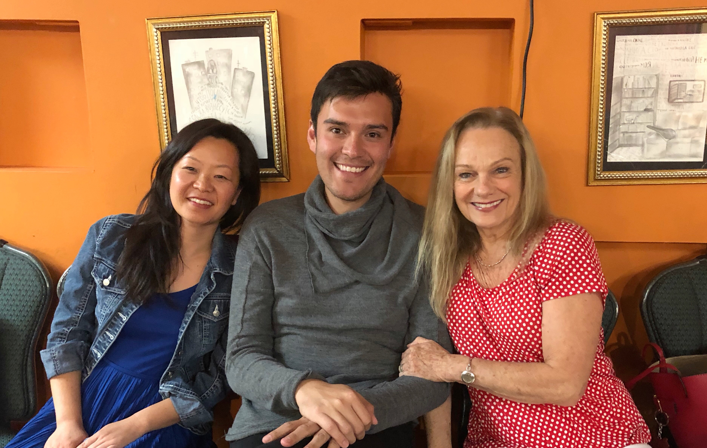
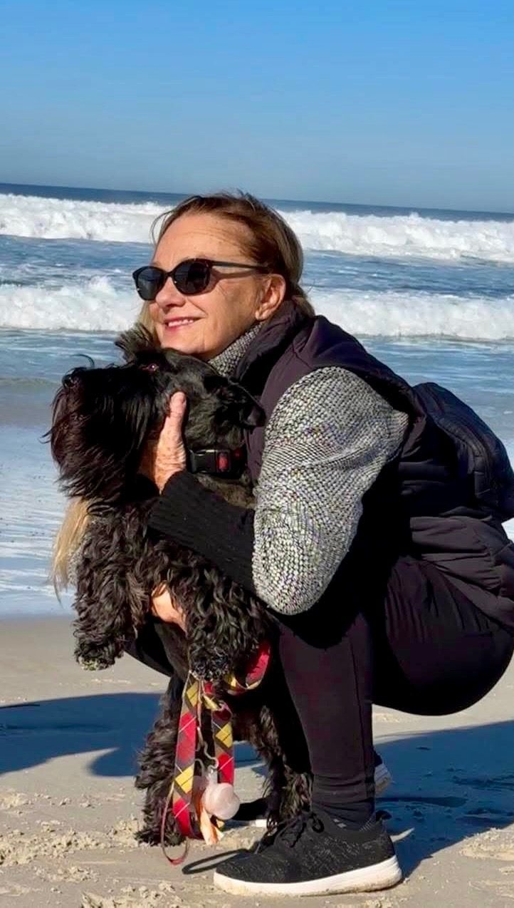

Teaching has been one of the great joys of my life for more than fifty years.
When a new student comes to my studio, my first goal is not simply to teach the flute. My first goal is to know the person sitting in front of me. I have always believed that a meaningful relationship comes first; then comes the flute.
Every student brings a unique personality, curiosity, and way of learning. My role is not to create another version of myself, but to help each student discover and develop their own musical voice. Technique, artistry, and discipline are essential, but they flourish best in an atmosphere of trust, encouragement, and genuine curiosity.

My home studio has always reflected the things I love. If you have visited, you know you were likely greeted first by a Scottish Terrier—and, of course, by the garden. My love of nature, gardening, and animals has always been an essential part of my life, and I believe those surroundings help create a peaceful and inspiring place to make music.
Over the years, my studio has become much more than a place for weekly lessons. Former and current students have gathered for recitals, garden parties, conversations, and celebrations. Watching students from different generations meet one another, share music, and form lasting friendships has been one of the greatest rewards of teaching. They have truly become my extended family.

Nothing brings me greater happiness than watching former students grow into accomplished performers, dedicated teachers, thoughtful musicians, and fulfilled individuals. Their achievements are entirely their own, but it has been a privilege to accompany them on part of their journey. Seeing them realize their dreams remains the greatest reward of my life as a teacher.